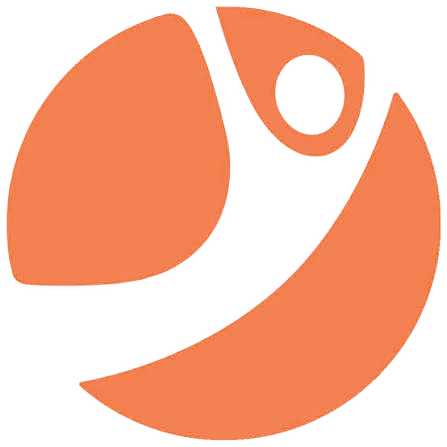

Industrial designer and hardware engineer in San Francisco. I take products from early prototype through engineering validation and manufacturing, and I've founded and run a hardware company of my own.
Experience
Taking product concepts to production-ready hardware: rapid prototyping, engineering validation, design-for-manufacturability, and supplier coordination to de-risk development and time to market.
Daylight Computer Co.
Worked across ergonomics, materials, reliability testing, and scalable production methods with cross-disciplinary teams to turn human-centric insight into a premium consumer device.
zaptrack
Built and led an autonomous agricultural robotics startup for organic farming. Piloted mowing robots across two acres of California almond and stone-fruit orchards and secured letters of intent worth roughly $50K/month.
Founders, Inc.
Helped an early hardware-AI startup scale prototype production for LLM-powered consumer products.
Procter & Gamble
Developed working prototypes for consumer testing using 3D printing and electronics, contributing to home & fabric care upstream research and development.
Designed a modular-size smart ring for a medical and lifestyle design start-up, exploring materials and forms alongside the engineering and business team.
Education
